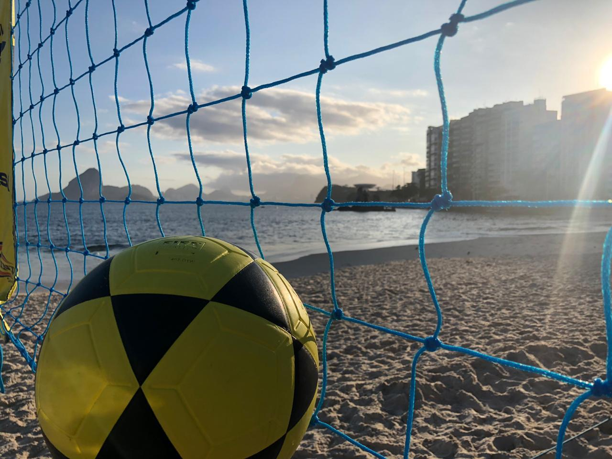
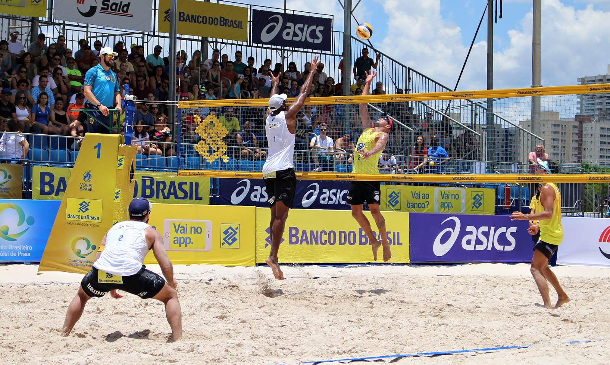

futevolei
O futevôlei é um esporte que combina o futebol e o vôlei, jogado em uma quadra de areia com uma rede divisória. As regras do jogo são semelhantes às do vôlei, mas com algumas diferenças, como o uso dos pés para tocar a bola.

volêi
O vôlei de praia (ou vôlei de areia) é uma variante do voleibol tradicional praticada em duplas na areia, com regras próprias, incluindo quadra de , bola mais leve e sets de 21 pontos. Popular no Brasil, o esporte integra movimento, saúde e lazer, com forte presença em clubes e praias.
